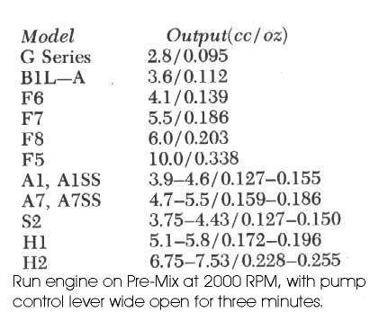
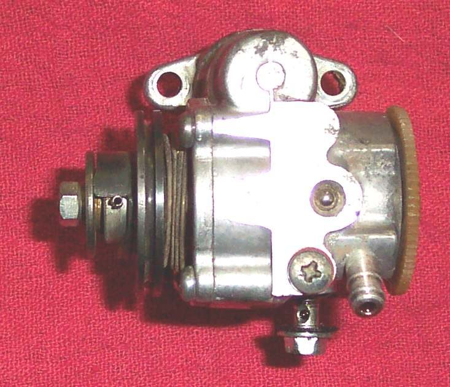
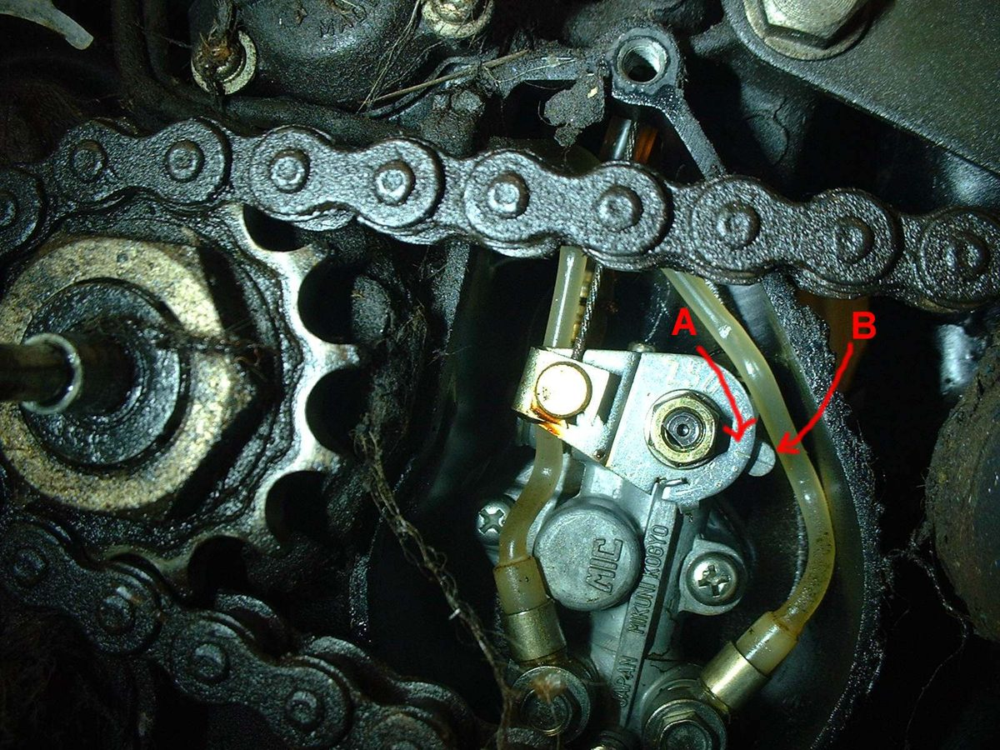

Many two-stroke bikes do not need oil mixed into the petrol. They have a small oil tank and an oil pump (often called autolube or oil injection) that feeds oil into the intake. The pump is driven by the engine and a cable from the throttle opens it more as you open the throttle. If the pump stops, the line is blocked or air gets in, the engine runs without oil and seizes, often within minutes. If the pump delivers too much, the bike smokes and oil drips from the exhaust.
Safety
- If the oil tank level has not dropped over a few days of riding, stop riding at once. Ride only after the fault is found, or premix oil in the fuel at the ratio your manual gives as an emergency measure.
- Never mix up the throttle cable and the pump cable when refitting.
What you can check safely
- Look at the oil tank. Is it full of the right two-stroke oil? Write down the level and check again after a fixed distance.
- Follow the oil line from the tank to the pump and from the pump to the intake. Look for kinks, cracks, a line off its spigot, or air bubbles in a clear line.
- Look at the pump cable. With the engine off, open the throttle and watch the pump lever move. A cable that is broken, loose or stuck leaves the pump at minimum.
- Check the pump drive is turning: on some bikes you can remove a small cover and see the drive shaft move when you kick the engine over. Follow the manual.
- Check the oil tank cap breather is clear; a blocked vent stops oil flowing.
- Check for a warning light on the dash that shows low oil, and test that it lights at key on.
What the workshop does
- Bleeds air from the line and pump using the bleed screw and the method in the manual.
- Checks pump output against the manual figure (often measured over a set time at a set engine speed) and sets the pump cable so the marks line up at the throttle position the manual gives.
- Replaces a worn pump, drive gear or check valve.
- Checks the engine for damage if it has run without oil: see Assess the top end (cylinder, piston, valves).
What to ask for
- The pump setting checked against the model manual, not set "by eye".
- The oil type used and how often to check the tank.
Do not attempt at home
- Disconnecting the pump and running only on premix without knowing the right ratio for your engine.
- Adjusting pump output without the manual figure.
Check your work
- Oil tank level falls steadily with riding.
- Light blue smoke only; no oil dripping from the exhaust.
If it did not fix the problem
- Engine has already tightened or seized: Engine has seized or locked up.
- Heavy smoke continues: Decarbonise a two-stroke exhaust and port.